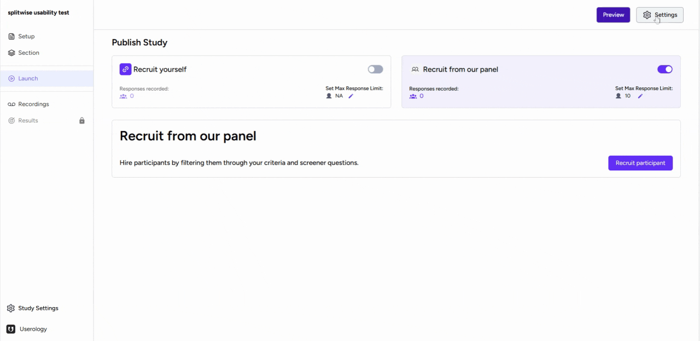
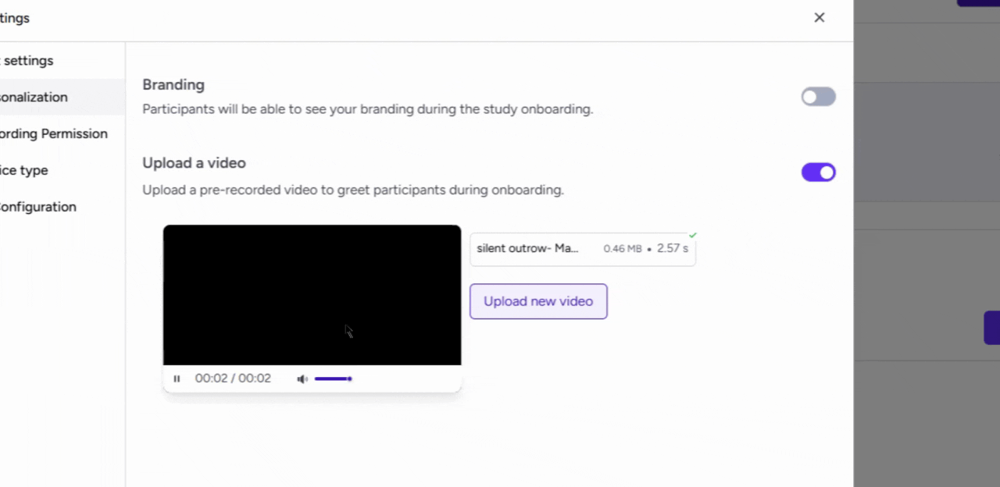
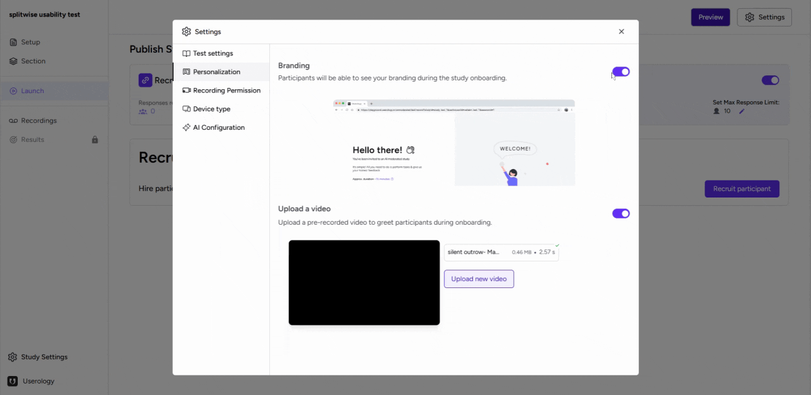
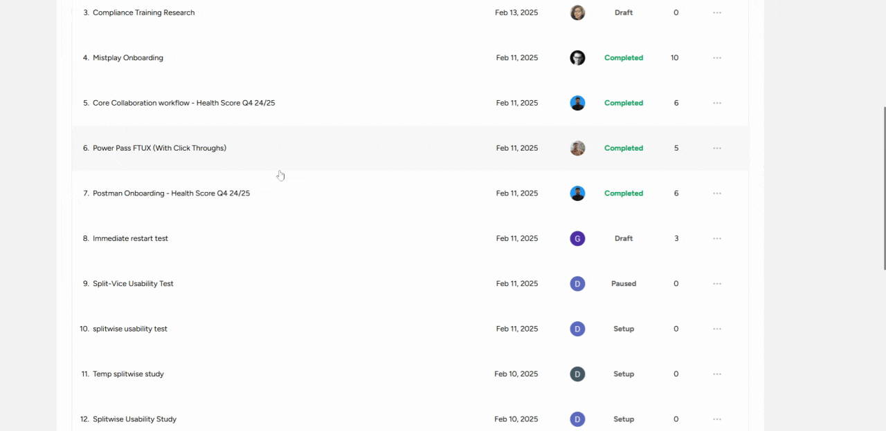

This guide explains how to personalize your study in Userology. Learn how to upload a greeting video and brand your study with a logo to enhance participant engagement.
Accessing Personalization Settings
Follow these steps to access the Personalization settings:
-
Navigate to the Launch tab.
-
Click the Settings button in the top-right corner.
-
Open the Personalization tab.

Uploading a Greeting Video
Add a greeting video to create a welcoming experience for participants.
-
In the Personalization tab, select Upload a Video.
-
Click Upload to add your pre-recorded video.
-
Preview the video to ensure it meets your expectations.

Branding Your Study with a Logo
Customize your study by adding your organization's logo.
-
In the Personalization tab, select Branding.
-
Go to your study's dashboard and click the study name.
-
Click the Settings icon in the top-right corner.
-
Upload your organization's logo.


Viewing Participant Changes
Verify how participants will see the updates.
-
The logo will appear in the top-left corner of their screen.
-
The greeting video will play when participants enter the study.

If you need further assistance, email us at support@userology.co